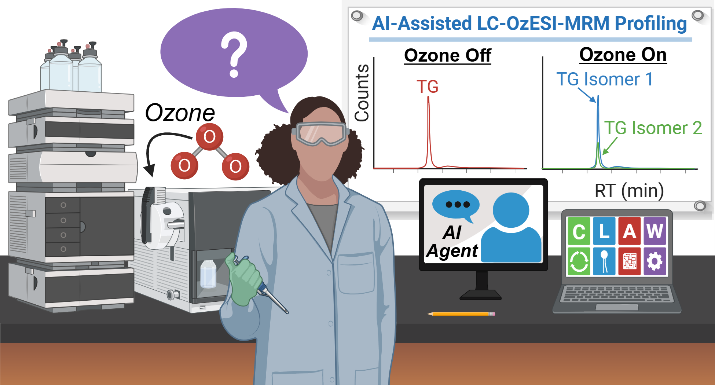
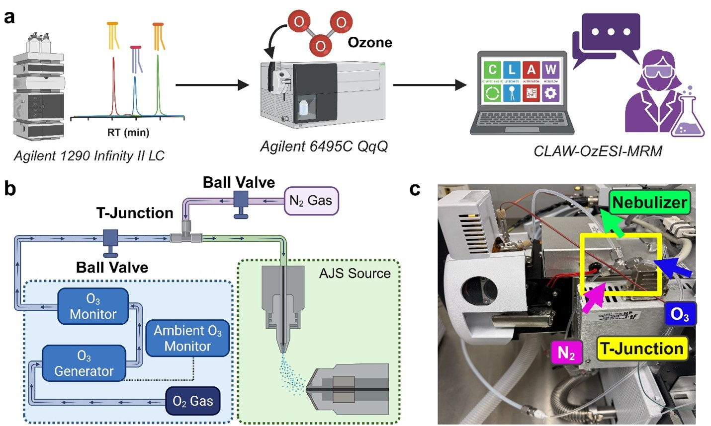

OzESI‑MRM




AI-powered LC-OzESI-MRM enables rapid, accessible, and isomer-specific fatty acid profiling to drive biomarker discovery and precision lipidomics.
- AI-powered LC-OzESI-MRM platform: Combines ozone-induced fragmentation with automated informatics and AI agents to achieve high-throughput, isomer-specific fatty acid profiling.
- Broad accessibility and biological relevance: Demonstrated on standard FA mixtures, NIST 1950 plasma, and disease models (Alzheimer’s, muscular dystrophy), uncovering extensive isomer diversity and disease-associated alterations.
- Improved resolution and reproducibility: Delivers rapid, robust, and accurate FA characterization beyond traditional methods, accelerating biomarker discovery and enabling precision lipidomics for therapeutic development.